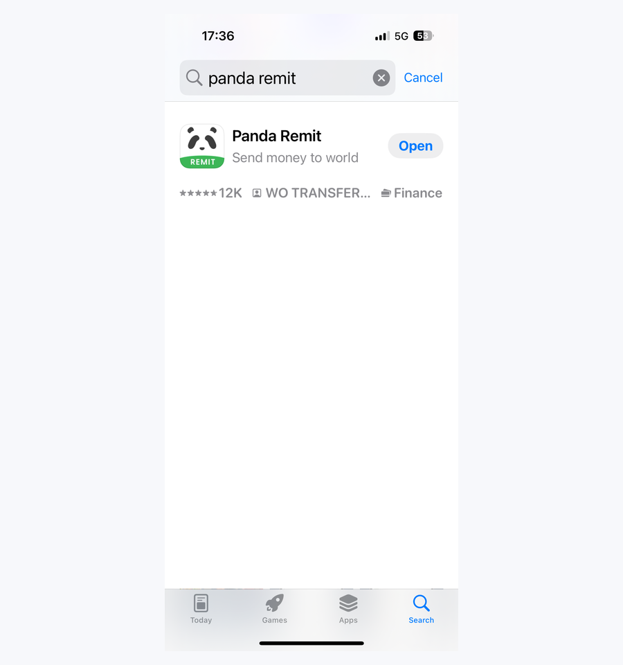

Step 01 · Get Started
Download the Panda Remit app
Search for “Panda Remit” on the App Store or Google Play, then download the app for free.
- Use a phone that can receive SMS verification codes from a Korean mobile number.
